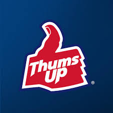
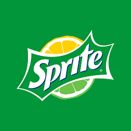
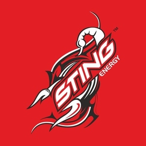
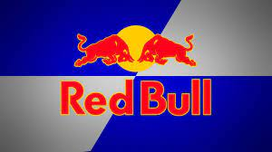
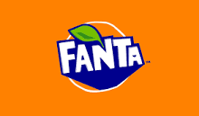
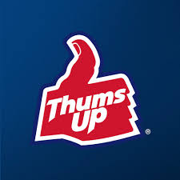
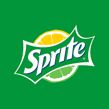
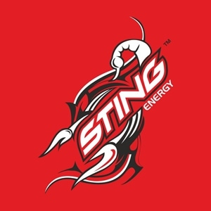
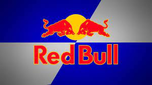
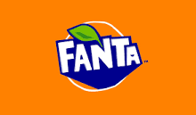

ABOUT US
Something as simple as bringing a child inside, offering them a cold drink, and having them rest can make a difference. Some of these models can also make deliciously frothy hot chocolate, tea, or cold drinks. If you were family and you got past his gate, he’d warmly tell you, “Well, come on in and have a cold drink, have a Pepsi.” Most concession stands remain shuttered, though a few are open offering Bento boxes and instant ramen and cold drinks for the benefit of the press and other attendees.
History of drinks
The first marketed soft drinks appeared in the 17th century as a mixture of water and lemon juice sweetened with honey. In 1676 the Compagnie de Limonadiers was formed in Paris and granted a monopoly for the sale of its products. Vendors carried tanks on their backs from which they dispensed cups of lemonade.
Carbonated beverages and waters were developed from European attempts in the 17th century to imitate the popular and naturally effervescent waters of famous springs, with primary interest in their reputed therapeutic values. The effervescent feature of the waters was recognized early as most important. Flemish scientist Jan Baptista van Helmont first used the term gas in his reference to the carbon dioxide content. French physician Gabriel Venel referred to aerated water, confusing the gas with ordinary air. British scientist Joseph Black named the gaseous constituent fixed air.
Robert Boyle, an Anglo-Irish philosopher and scientist who helped found modern chemistry, published his Short Memoirs for the Natural Experimental History of Mineral Waters in 1685. It included sections on examining mineral springs, on the properties of the water, on its effects upon the human body, and, lastly, “of the imitation of natural medicinal waters by chymical and other artificial wayes.”

 








